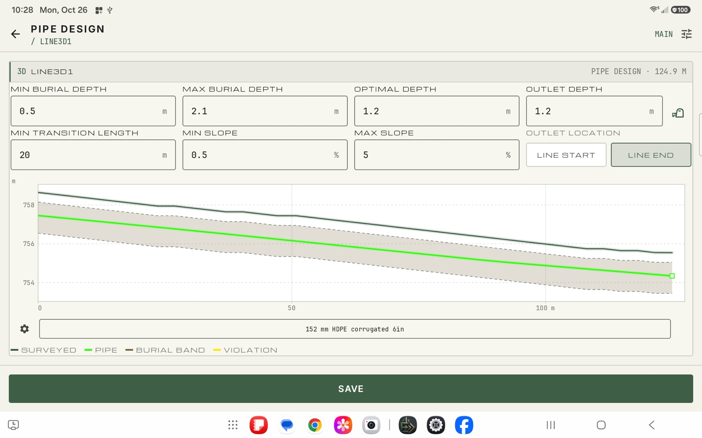
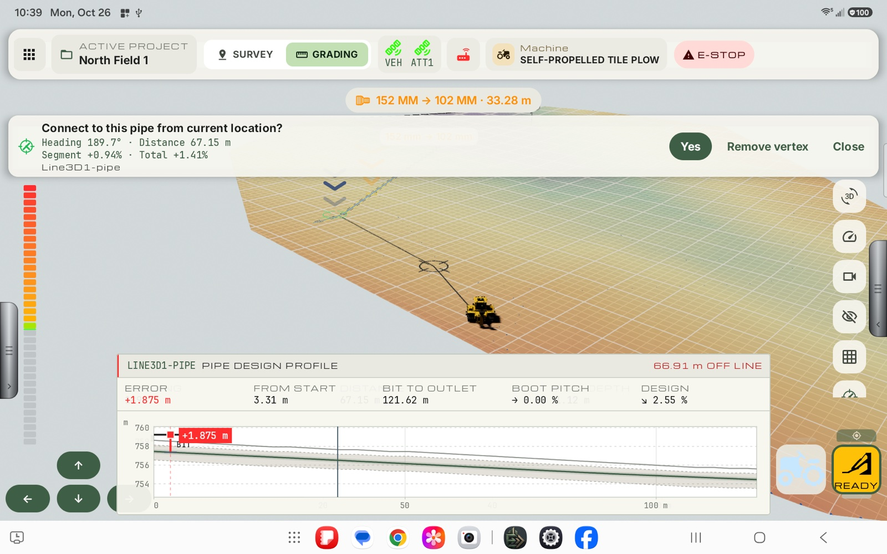

User Manual
Easy to learn, easier to run.
Exodus is built so you spend your time on the ground, not in menus. This manual walks through setup, surveying, designing tile and grading to it, with real screenshots from the app.
The full manual is included with every Exodus system. Screenshots were captured on a 10-inch Android tablet in landscape. Layout is the same on other devices, but panel positions may shift slightly.

Getting started
Set up once, then get to work.

Survey run screen
Survey that stays out of your way.

GPS Diagnostics
See exactly why a fix is poor.

Tile plow run screen
One machine, two modes: survey and grade.

Pipe design
From a recorded line to a buried pipe design.

Grading and as-installed
Grade with guidance you can read at a glance.

Tie-ins
Join new pipe to existing pipe with confidence.
Quick reference
Find any feature fast.